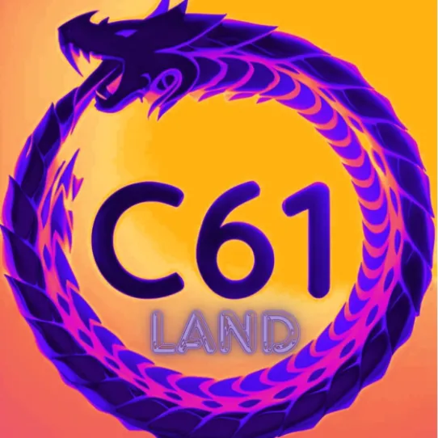

| Monthly Event Rewards Finally, all our members will be able to get Loka while spending crystals. The event will run for 1 month, the players will be rewarded according to their DEV points contribution. Each DEV point equals 5 crystal, for example, spending 1000 crystals you will contribute 200 DEV points. Also, there are a few ways to earn more DEV points, by spending crystals and gathering resources nodes (resource, Dsa, crystal mine). All the surrounding lands are named with C61 (UP) and the central C61 CENTER, from the surrounding land you can earn dev points by 12.5%. All contributors will receive 65% of the total amount of the profit from the LANDs that are generated each month. Also, there will be extra rewards for the top contributors, starting with 10 positions for the first month. |
 | ||||||||||||||||||||||||||||||||||||||||||||||||||||||||||||||||||||||||||||||||||||||||||||||||||
| Rewards for the top 10 players 1st Legendary dragon 1-month (100%) 20k medals (Minimum requirement dev points : 32k dev points) 2nd 1.0 B resources 10K medals (Minimum requirement dev points : 16k dev points) 3rd 500 M resources 5K medals (Minimum requirement dev points : 8k dev points) 4th 200 M resources 5K medals (Minimum requirement dev points : 6k dev points) 5th 100 M resources 5K medals ==//== 6th 100 M resources 5K medals ==//== 7th 100 M resources 5K medals ==//== 8th 100 M resources 5K medals ==//== 9th 100 M resources 5K medals ==//== 10th 100 M resources 5K medals ==//== How to join our program - Create a wallet if doesn’t exist - Register your kingdoms STEPS 1ST send your wallet address (in-game) via chat message ->castle: UP61 location: X1000 Y1046 2ND wait for the start date of the event that you will be informed about via discord 3RD teleport at the right place to spend crystals, land ID 144705 (X:1292 Y:1396) 4TH there are 16 available seats in the land, make sure you seat in the following locations X:1288 Y:1398 X:1290 Y:1398 X:1292 Y:1398 X:1294 Y:1398 X:1288 Y:1396 X:1290 Y:1396 X:1292 Y:1396 X:1294 Y:1396 X:1288 Y:1394 X:1290 Y:1394 X:1292 Y:1394 X:1294 Y:1394 X:1288 Y:1392 X:1290 Y:1392 X:1292 Y:1392 X:1294 Y:1392 How to contribute - Gathering resources Nodes (gems, Dsa, resources) - Spending crystals while you having your kingdoms on the (land ID 144705 X:1292 Y:1396) Notes - Spots on the central land can only be occupied for 24Hrs/48Hrs - Make sure you sent the correct wallet address, using polygon network - Players can use multiple kingdoms for the program, by using the same wallet - Make sure you have added the correct contract address for WLOKA - (0x0C0391a4abeF50FC9386F69f2266d4d2fBEB96C7) - Participants will get ™ symbol to verify DSA & CRYSTAL rights |
|||||||||||||||||||||||||||||||||||||||||||||||||||||||||||||||||||||||||||||||||||||||||||||||||||